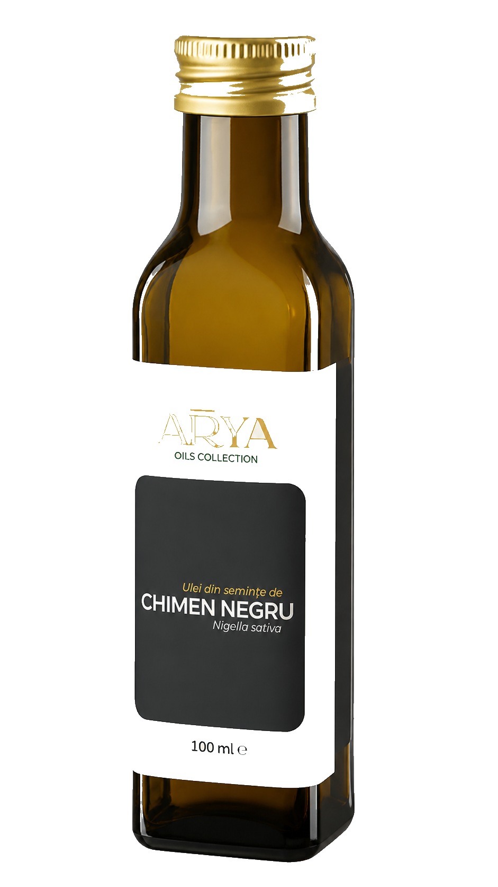

“A room full of morning light, and one beautiful object standing in it.”

Product · as shotWarm white dominates 90% of every surface. Amber appears only as the oil itself. Ink only as a few words.
Manrope · Medium 500 — micro-labels, navigation, the single line of body. Generous tracking, set quiet.
Single-origin Nigella sativa, pressed whole in small batches and bottled the same day.
Discover the oil“Before you read a word, you can already feel how the oil pours.”
The oil's own colour leads. Warm cream surfaces let the amber photography glow at full saturation.
Type stays out of the way. It captions the photograph; it never competes with it. Wide margins, low contrast in scale.
What the press releases, we bottle. Nothing clarified away.
Discover the oil“Presented like an instrument. The confidence to show only the object.”
Cool-neutral warm white. One bronze tick for the index marks. The amber lives only in the glass.
Type is nearly silent — a single serif word, monospace coordinates, no paragraphs on the hero. Precision over persuasion.